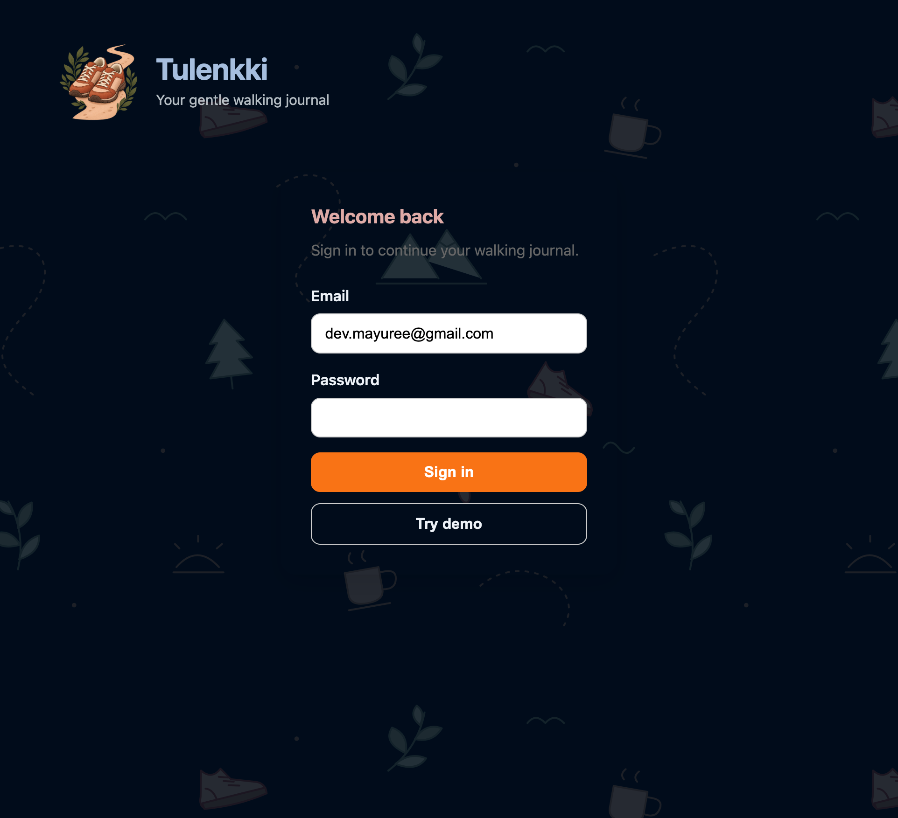
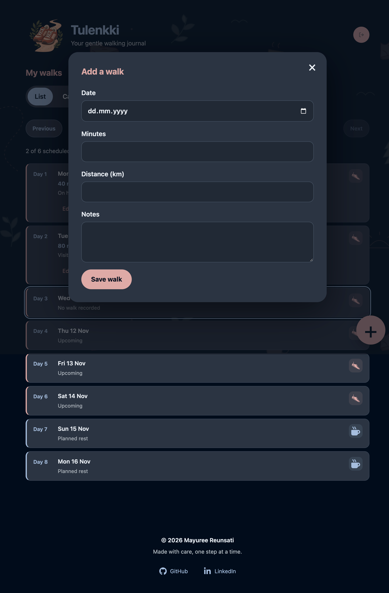
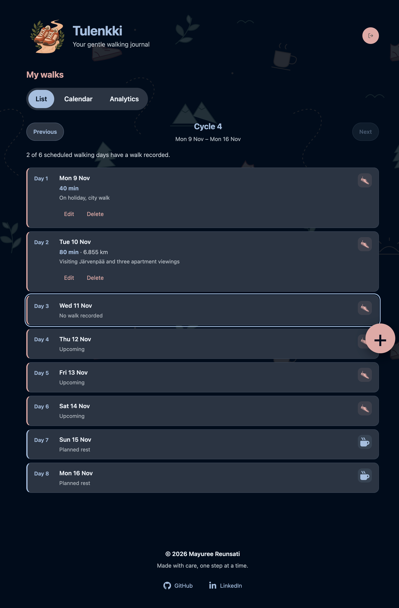
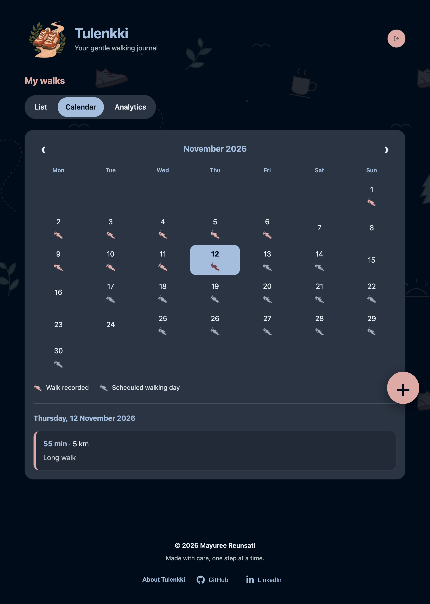
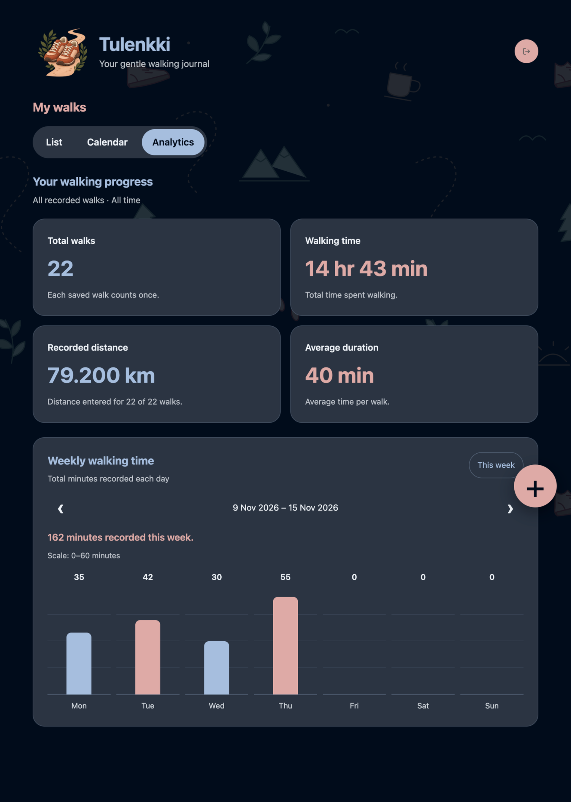

Tulenkki is a personal walking journal for recording walks,
following a walking-and-rest routine, and reviewing progress
through list, calendar, and analytics views.
I built it for my own walking routine and to strengthen my
backend skills with Python, Flask, PostgreSQL, REST APIs,
and Docker. The project connects a responsive React interface
to a protected Flask API and a cloud-hosted database.

Features
-
Walking records
-
Add, view, edit, and delete walks.
-
Record the date, duration in whole minutes,
optional distance, and notes.
-
Calendar and progress
-
Browse recorded walks in list and calendar views.
-
Review walking progress through analytics,
including average minutes per walk.
-
Walking-and-rest routine
-
Follow an eight-day cycle with six walking
days and two rest days.
-
Authentication and demo access
-
Sign in with email and password using
Supabase Auth.
-
The Flask API verifies access tokens
and restricts access to the configured user.
-
Explore the app through the “Try demo”
button without entering credentials.
-
Responsive interface
-
Use the journal on desktop and mobile.
-
Navigate between views with subtle
page transitions.
signin
-
App installation
-
Install Tulenkki from Chrome on Android and launch it
from the home screen.
-
Includes a web app manifest and custom icons,
with installation tested on a real Android device.


Backend and architecture
The React frontend is hosted on Vercel. It sends API
requests with an access token to a Dockerized Flask
backend on Render. Flask validates requests and uses
parameterized SQL queries to read and update PostgreSQL
data hosted on Supabase.
-
Frontend: React displays walking records and
provides forms for creating and editing entries.
-
API: Flask handles authentication checks, input
validation, and CRUD operations.
-
Database: PostgreSQL stores walking records with
constraints for valid durations and distances.
-
Authentication: Supabase Auth handles sign-in,
while Flask checks access tokens and the allowed user.
-
Local development: PostgreSQL runs in Docker,
and Vite proxies walking-record requests to Flask.
-
Production: The Flask backend runs with Gunicorn
inside a Docker container on Render.
Engineering details
I focused on the behaviour behind the interface as well
as the interface itself: validating input, handling
missing records, and keeping stored data consistent.
-
Shared validation logic between create and update
operations.
-
Checked that dates are valid, minutes are positive
whole numbers, and distances are finite and
non-negative.
-
Stored an unknown distance as NULL rather than zero.
-
Used parameterized SQL queries for database operations.
-
Manually tested create, edit, and delete flows,
including persistence after refreshing the page.
-
Tested database backup restoration in a separate
database and compared row counts.


Tech stack
- Frontend: React, Vite, and CSS
- Backend: Python, Flask, and Gunicorn
- Database access: Psycopg and parameterized SQL
- Database: PostgreSQL hosted on Supabase
- Authentication: Supabase Auth
- Containers: Docker
- Hosting: Vercel and Render
- Version control: Git and GitHub
What I learned
Tulenkki helped me connect the pieces of a full-stack
application: React forms, authenticated API requests,
backend validation, SQL queries, and deployment.
-
Building a Flask REST API and connecting it to
PostgreSQL with Psycopg.
-
Designing database tables with identity columns
and constraints.
-
Implementing token verification and protected endpoints.
-
Writing a Dockerfile and running Flask with Gunicorn.
-
Configuring environment variables and debugging
CORS and deployment issues.
-
Testing the interface on a real phone and checking
API behaviour with curl and browser developer tools.
-
Configuring a web app manifest and maskable icons,
and testing installation through Chrome on Android.
Current scope and next steps
Tulenkki is a personal, single-user application rather
than a multi-user service. Core walking-record operations,
sign-in, and token checks are implemented, and the
frontend and backend are deployed.
The walking cycle currently uses fixed settings in the
frontend. A routine_settings table already exists in
the database; connecting the cycle view to those settings
is a planned improvement.
The backend runs on a free hosting plan and sleeps when
idle, so the first request after a quiet period may
take about a minute.
Explore Tulenkki
Open the live app and choose “Try demo” on the sign-in
page to explore without entering credentials.
Please allow about a minute for the backend to wake up
on the first request.
Open Live App
View GitHub